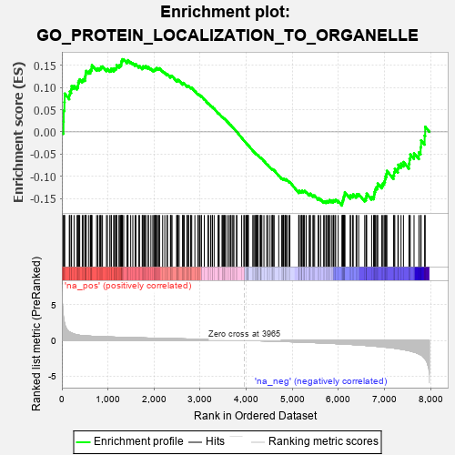

| | | Dataset | 7d |
| Phenotype | NoPhenotypeAvailable |
| Upregulated in class | na_neg |
| GeneSet | GO_PROTEIN_LOCALIZATION_TO_ORGANELLE |
| Enrichment Score (ES) | -0.16619441 |
| Normalized Enrichment Score (NES) | -0.576456 |
| Nominal p-value | 1.0 |
| FDR q-value | 1.0 |
| FWER p-Value | 1.0 |
Table: GSEA Results Summary

Fig 1: Enrichment plot: GO_PROTEIN_LOCALIZATION_TO_ORGANELLE
Profile of the Running ES Score & Positions of GeneSet Members on the Rank Ordered List
| PROBE | GENE SYMBOL | GENE_TITLE | RANK IN GENE LIST | RANK METRIC SCORE | RUNNING ES | CORE ENRICHMENT | | 1 | SPO11 | | | 35 | 3.371 | 0.0229 | Yes |
| 2 | SIX2 | | | 40 | 3.152 | 0.0481 | Yes |
| 3 | DCLK1 | | | 55 | 2.532 | 0.0669 | Yes |
| 4 | RAC2 | | | 60 | 2.442 | 0.0863 | Yes |
| 5 | CSRP3 | | | 161 | 1.186 | 0.0830 | Yes |
| 6 | BUB3 | | | 172 | 1.143 | 0.0911 | Yes |
| 7 | BCL3 | | | 202 | 1.047 | 0.0958 | Yes |
| 8 | RHOU | | | 210 | 1.031 | 0.1033 | Yes |
| 9 | COX18 | | | 264 | 0.890 | 0.1037 | Yes |
| 10 | NUP85 | | | 329 | 0.772 | 0.1017 | Yes |
| 11 | GSK3A | | | 351 | 0.745 | 0.1050 | Yes |
| 12 | TAPT1 | | | 354 | 0.743 | 0.1108 | Yes |
| 13 | LARP7 | | | 369 | 0.731 | 0.1150 | Yes |
| 14 | BAX | | | 387 | 0.711 | 0.1186 | Yes |
| 15 | SUFU | | | 443 | 0.665 | 0.1168 | Yes |
| 16 | WRN | | | 469 | 0.649 | 0.1189 | Yes |
| 17 | NXT2 | | | 502 | 0.628 | 0.1199 | Yes |
| 18 | NUP54 | | | 505 | 0.627 | 0.1247 | Yes |
| 19 | NMD3 | | | 513 | 0.625 | 0.1289 | Yes |
| 20 | GET4 | | | 520 | 0.623 | 0.1332 | Yes |
| 21 | HTRA2 | | | 527 | 0.621 | 0.1375 | Yes |
| 22 | MX1 | | | 578 | 0.604 | 0.1359 | Yes |
| 23 | NDC80 | | | 616 | 0.590 | 0.1359 | Yes |
| 24 | TAF8 | | | 622 | 0.587 | 0.1401 | Yes |
| 25 | PLRG1 | | | 644 | 0.579 | 0.1421 | Yes |
| 26 | MCM8 | | | 646 | 0.578 | 0.1466 | Yes |
| 27 | TNPO3 | | | 651 | 0.576 | 0.1508 | Yes |
| 28 | SUMO3 | | | 753 | 0.544 | 0.1421 | Yes |
| 29 | RAD21 | | | 779 | 0.538 | 0.1433 | Yes |
| 30 | RPA1 | | | 817 | 0.527 | 0.1428 | Yes |
| 31 | SGF29 | | | 840 | 0.521 | 0.1442 | Yes |
| 32 | RPA2 | | | 851 | 0.519 | 0.1471 | Yes |
| 33 | HDAC8 | | | 881 | 0.510 | 0.1475 | Yes |
| 34 | ZPR1 | | | 967 | 0.491 | 0.1405 | Yes |
| 35 | TAF3 | | | 988 | 0.486 | 0.1418 | Yes |
| 36 | AKT1 | | | 1040 | 0.476 | 0.1391 | Yes |
| 37 | XPA | | | 1070 | 0.469 | 0.1392 | Yes |
| 38 | AIFM1 | | | 1072 | 0.469 | 0.1428 | Yes |
| 39 | NUP93 | | | 1127 | 0.459 | 0.1396 | Yes |
| 40 | SRC | | | 1128 | 0.459 | 0.1433 | Yes |
| 41 | UBL5 | | | 1162 | 0.452 | 0.1427 | Yes |
| 42 | TFDP1 | | | 1180 | 0.450 | 0.1442 | Yes |
| 43 | CRIPT | | | 1185 | 0.449 | 0.1473 | Yes |
| 44 | NEDD1 | | | 1186 | 0.449 | 0.1510 | Yes |
| 45 | KAT7 | | | 1240 | 0.440 | 0.1477 | Yes |
| 46 | SRP68 | | | 1247 | 0.439 | 0.1505 | Yes |
| 47 | PACS1 | | | 1275 | 0.435 | 0.1505 | Yes |
| 48 | PEX3 | | | 1287 | 0.432 | 0.1526 | Yes |
| 49 | PARL | | | 1290 | 0.432 | 0.1559 | Yes |
| 50 | DKC1 | | | 1292 | 0.431 | 0.1593 | Yes |
| 51 | UBL4A | | | 1307 | 0.427 | 0.1609 | Yes |
| 52 | PEX5 | | | 1313 | 0.427 | 0.1638 | Yes |
| 53 | KPTN | | | 1341 | 0.422 | 0.1637 | No |
| 54 | CARM1 | | | 1413 | 0.408 | 0.1578 | No |
| 55 | NUP88 | | | 1429 | 0.404 | 0.1592 | No |
| 56 | CHMP7 | | | 1435 | 0.403 | 0.1618 | No |
| 57 | SPCS2 | | | 1493 | 0.391 | 0.1576 | No |
| 58 | SEC62 | | | 1539 | 0.385 | 0.1549 | No |
| 59 | PAF1 | | | 1588 | 0.376 | 0.1517 | No |
| 60 | SRP14 | | | 1606 | 0.373 | 0.1526 | No |
| 61 | ACOX3 | | | 1670 | 0.361 | 0.1473 | No |
| 62 | TNPO1 | | | 1684 | 0.359 | 0.1486 | No |
| 63 | MRNIP | | | 1743 | 0.346 | 0.1439 | No |
| 64 | GPAA1 | | | 1757 | 0.344 | 0.1450 | No |
| 65 | WAPL | | | 1758 | 0.344 | 0.1478 | No |
| 66 | NUP58 | | | 1787 | 0.340 | 0.1469 | No |
| 67 | RPF2 | | | 1814 | 0.335 | 0.1463 | No |
| 68 | MSH2 | | | 1819 | 0.334 | 0.1485 | No |
| 69 | NUP62 | | | 1871 | 0.324 | 0.1445 | No |
| 70 | DCP1A | | | 1877 | 0.323 | 0.1465 | No |
| 71 | TASOR | | | 1931 | 0.316 | 0.1422 | No |
| 72 | ZW10 | | | 1973 | 0.309 | 0.1394 | No |
| 73 | MCRS1 | | | 1996 | 0.305 | 0.1390 | No |
| 74 | DNLZ | | | 2012 | 0.303 | 0.1395 | No |
| 75 | DMAP1 | | | 2025 | 0.301 | 0.1404 | No |
| 76 | VPS25 | | | 2033 | 0.300 | 0.1420 | No |
| 77 | GOSR2 | | | 2050 | 0.298 | 0.1423 | No |
| 78 | PEX2 | | | 2056 | 0.298 | 0.1441 | No |
| 79 | SRP72 | | | 2090 | 0.292 | 0.1422 | No |
| 80 | BMP7 | | | 2107 | 0.290 | 0.1425 | No |
| 81 | SNF8 | | | 2119 | 0.288 | 0.1434 | No |
| 82 | SYK | | | 2186 | 0.278 | 0.1371 | No |
| 83 | ARL5B | | | 2233 | 0.271 | 0.1334 | No |
| 84 | AIP | | | 2281 | 0.263 | 0.1294 | No |
| 85 | ECH1 | | | 2290 | 0.261 | 0.1305 | No |
| 86 | OXA1L | | | 2355 | 0.252 | 0.1242 | No |
| 87 | SIN3A | | | 2361 | 0.251 | 0.1256 | No |
| 88 | COG7 | | | 2371 | 0.250 | 0.1265 | No |
| 89 | SAE1 | | | 2390 | 0.247 | 0.1262 | No |
| 90 | UBAC2 | | | 2488 | 0.229 | 0.1155 | No |
| 91 | CDT1 | | | 2505 | 0.226 | 0.1152 | No |
| 92 | HUWE1 | | | 2506 | 0.225 | 0.1171 | No |
| 93 | NUMB | | | 2519 | 0.224 | 0.1173 | No |
| 94 | SRP54 | | | 2544 | 0.220 | 0.1160 | No |
| 95 | BAG3 | | | 2620 | 0.209 | 0.1080 | No |
| 96 | NUP50 | | | 2625 | 0.209 | 0.1092 | No |
| 97 | GNPAT | | | 2629 | 0.208 | 0.1105 | No |
| 98 | VPS4A | | | 2654 | 0.205 | 0.1090 | No |
| 99 | PHB2 | | | 2712 | 0.197 | 0.1032 | No |
| 100 | DDX1 | | | 2718 | 0.196 | 0.1042 | No |
| 101 | LMAN1 | | | 2743 | 0.192 | 0.1026 | No |
| 102 | AGK | | | 2752 | 0.191 | 0.1032 | No |
| 103 | ECI2 | | | 2794 | 0.184 | 0.0993 | No |
| 104 | ATR | | | 2800 | 0.183 | 0.1002 | No |
| 105 | SRP19 | | | 2817 | 0.181 | 0.0996 | No |
| 106 | PDCD5 | | | 2885 | 0.169 | 0.0923 | No |
| 107 | RAB10 | | | 2952 | 0.157 | 0.0850 | No |
| 108 | XPO1 | | | 2960 | 0.156 | 0.0853 | No |
| 109 | PEX1 | | | 2990 | 0.151 | 0.0828 | No |
| 110 | BRCA2 | | | 3024 | 0.146 | 0.0797 | No |
| 111 | SEC63 | | | 3025 | 0.146 | 0.0809 | No |
| 112 | CHP1 | | | 3089 | 0.138 | 0.0738 | No |
| 113 | PAX6 | | | 3170 | 0.127 | 0.0645 | No |
| 114 | RBM22 | | | 3182 | 0.125 | 0.0641 | No |
| 115 | PEX10 | | | 3227 | 0.117 | 0.0593 | No |
| 116 | NUP98 | | | 3261 | 0.112 | 0.0560 | No |
| 117 | MIPEP | | | 3266 | 0.111 | 0.0563 | No |
| 118 | SMAD3 | | | 3303 | 0.105 | 0.0525 | No |
| 119 | DDX3X | | | 3388 | 0.091 | 0.0424 | No |
| 120 | MED1 | | | 3405 | 0.089 | 0.0410 | No |
| 121 | COG3 | | | 3412 | 0.088 | 0.0410 | No |
| 122 | HGS | | | 3476 | 0.080 | 0.0334 | No |
| 123 | CDK5 | | | 3480 | 0.080 | 0.0337 | No |
| 124 | UFM1 | | | 3506 | 0.077 | 0.0311 | No |
| 125 | UBR5 | | | 3518 | 0.074 | 0.0303 | No |
| 126 | HDAC3 | | | 3528 | 0.072 | 0.0297 | No |
| 127 | PIN1 | | | 3543 | 0.069 | 0.0284 | No |
| 128 | LRWD1 | | | 3582 | 0.063 | 0.0240 | No |
| 129 | NOLC1 | | | 3623 | 0.056 | 0.0193 | No |
| 130 | FIS1 | | | 3654 | 0.051 | 0.0158 | No |
| 131 | SKP1 | | | 3663 | 0.049 | 0.0152 | No |
| 132 | DHX9 | | | 3693 | 0.044 | 0.0118 | No |
| 133 | NF1 | | | 3713 | 0.040 | 0.0096 | No |
| 134 | SYT11 | | | 3732 | 0.036 | 0.0076 | No |
| 135 | SRPRA | | | 3788 | 0.029 | 0.0007 | No |
| 136 | SPCS1 | | | 3795 | 0.028 | 0.0001 | No |
| 137 | NIPBL | | | 3900 | 0.010 | -0.0133 | No |
| 138 | GPC6 | | | 3950 | 0.002 | -0.0196 | No |
| 139 | GGA1 | | | 3952 | 0.002 | -0.0197 | No |
| 140 | VPS35 | | | 3989 | -0.006 | -0.0244 | No |
| 141 | TULP2 | | | 3997 | -0.007 | -0.0252 | No |
| 142 | PARP1 | | | 4014 | -0.010 | -0.0272 | No |
| 143 | TOR1A | | | 4030 | -0.013 | -0.0290 | No |
| 144 | SYS1 | | | 4038 | -0.014 | -0.0298 | No |
| 145 | MCPH1 | | | 4039 | -0.014 | -0.0297 | No |
| 146 | SGTB | | | 4044 | -0.015 | -0.0301 | No |
| 147 | HMGCL | | | 4141 | -0.031 | -0.0423 | No |
| 148 | MCM9 | | | 4163 | -0.036 | -0.0448 | No |
| 149 | AP2B1 | | | 4185 | -0.039 | -0.0472 | No |
| 150 | VPS11 | | | 4202 | -0.041 | -0.0489 | No |
| 151 | GBF1 | | | 4215 | -0.044 | -0.0501 | No |
| 152 | VTI1A | | | 4224 | -0.046 | -0.0508 | No |
| 153 | BBIP1 | | | 4226 | -0.046 | -0.0505 | No |
| 154 | GAK | | | 4249 | -0.050 | -0.0530 | No |
| 155 | ARL2 | | | 4254 | -0.050 | -0.0531 | No |
| 156 | RRS1 | | | 4256 | -0.051 | -0.0528 | No |
| 157 | RAN | | | 4299 | -0.059 | -0.0578 | No |
| 158 | BAG4 | | | 4314 | -0.061 | -0.0591 | No |
| 159 | AUP1 | | | 4315 | -0.062 | -0.0586 | No |
| 160 | ROMO1 | | | 4320 | -0.063 | -0.0586 | No |
| 161 | AMACR | | | 4338 | -0.066 | -0.0602 | No |
| 162 | ARF4 | | | 4383 | -0.073 | -0.0654 | No |
| 163 | SETD2 | | | 4443 | -0.084 | -0.0723 | No |
| 164 | LRRK2 | | | 4467 | -0.087 | -0.0746 | No |
| 165 | PINX1 | | | 4515 | -0.097 | -0.0799 | No |
| 166 | APC | | | 4558 | -0.107 | -0.0845 | No |
| 167 | BAG6 | | | 4563 | -0.108 | -0.0841 | No |
| 168 | MPV17 | | | 4575 | -0.112 | -0.0846 | No |
| 169 | VPS28 | | | 4582 | -0.114 | -0.0845 | No |
| 170 | ESCO2 | | | 4605 | -0.119 | -0.0864 | No |
| 171 | ARF6 | | | 4704 | -0.140 | -0.0980 | No |
| 172 | SRPRB | | | 4769 | -0.151 | -0.1050 | No |
| 173 | RTN4 | | | 4783 | -0.154 | -0.1055 | No |
| 174 | TERT | | | 4801 | -0.157 | -0.1064 | No |
| 175 | MTCH2 | | | 4806 | -0.158 | -0.1056 | No |
| 176 | FBXW7 | | | 4816 | -0.161 | -0.1055 | No |
| 177 | VPS36 | | | 4845 | -0.167 | -0.1077 | No |
| 178 | DHRS4 | | | 4851 | -0.168 | -0.1070 | No |
| 179 | DLG1 | | | 4860 | -0.169 | -0.1067 | No |
| 180 | CLU | | | 4889 | -0.174 | -0.1089 | No |
| 181 | ATRX | | | 4929 | -0.184 | -0.1124 | No |
| 182 | XRCC5 | | | 4946 | -0.187 | -0.1130 | No |
| 183 | RER1 | | | 5139 | -0.235 | -0.1360 | No |
| 184 | FLCN | | | 5140 | -0.235 | -0.1341 | No |
| 185 | IPO7 | | | 5142 | -0.236 | -0.1323 | No |
| 186 | DCTN2 | | | 5175 | -0.243 | -0.1345 | No |
| 187 | SMO | | | 5195 | -0.247 | -0.1349 | No |
| 188 | IPO5 | | | 5207 | -0.248 | -0.1343 | No |
| 189 | ATM | | | 5210 | -0.249 | -0.1325 | No |
| 190 | TNKS2 | | | 5239 | -0.254 | -0.1341 | No |
| 191 | IDE | | | 5252 | -0.258 | -0.1336 | No |
| 192 | CDK1 | | | 5264 | -0.262 | -0.1329 | No |
| 193 | RAB7A | | | 5302 | -0.271 | -0.1354 | No |
| 194 | ACOT8 | | | 5364 | -0.288 | -0.1410 | No |
| 195 | FZD5 | | | 5386 | -0.292 | -0.1414 | No |
| 196 | DLG4 | | | 5388 | -0.293 | -0.1391 | No |
| 197 | CBLB | | | 5445 | -0.306 | -0.1439 | No |
| 198 | ACOX2 | | | 5461 | -0.310 | -0.1433 | No |
| 199 | STIL | | | 5483 | -0.314 | -0.1435 | No |
| 200 | EHD1 | | | 5560 | -0.336 | -0.1506 | No |
| 201 | NVL | | | 5572 | -0.338 | -0.1493 | No |
| 202 | GNL3 | | | 5614 | -0.349 | -0.1517 | No |
| 203 | CASP8 | | | 5678 | -0.369 | -0.1569 | No |
| 204 | TTBK2 | | | 5700 | -0.376 | -0.1566 | No |
| 205 | TIA1 | | | 5731 | -0.386 | -0.1573 | No |
| 206 | MX2 | | | 5745 | -0.390 | -0.1558 | No |
| 207 | VAMP7 | | | 5777 | -0.399 | -0.1566 | No |
| 208 | LAMP1 | | | 5796 | -0.404 | -0.1556 | No |
| 209 | BBS4 | | | 5806 | -0.407 | -0.1535 | No |
| 210 | ARL6 | | | 5847 | -0.417 | -0.1553 | No |
| 211 | SZT2 | | | 5882 | -0.429 | -0.1562 | No |
| 212 | SUN2 | | | 5893 | -0.433 | -0.1539 | No |
| 213 | STK11 | | | 5922 | -0.443 | -0.1540 | No |
| 214 | VAPA | | | 5939 | -0.449 | -0.1524 | No |
| 215 | GCC2 | | | 5994 | -0.470 | -0.1556 | No |
| 216 | CALR | | | 6077 | -0.499 | -0.1621 | No |
| 217 | PLK1 | | | 6082 | -0.500 | -0.1586 | No |
| 218 | UBB | | | 6090 | -0.503 | -0.1554 | No |
| 219 | AP3M1 | | | 6100 | -0.506 | -0.1524 | No |
| 220 | ATG13 | | | 6110 | -0.508 | -0.1495 | No |
| 221 | PEX12 | | | 6115 | -0.510 | -0.1458 | No |
| 222 | DLG2 | | | 6126 | -0.513 | -0.1429 | No |
| 223 | IFT80 | | | 6135 | -0.515 | -0.1398 | No |
| 224 | TNKS | | | 6138 | -0.516 | -0.1358 | No |
| 225 | PEX13 | | | 6255 | -0.557 | -0.1463 | No |
| 226 | AP3D1 | | | 6261 | -0.558 | -0.1424 | No |
| 227 | DCLK3 | | | 6305 | -0.578 | -0.1433 | No |
| 228 | BOD1 | | | 6320 | -0.583 | -0.1404 | No |
| 229 | BBS2 | | | 6383 | -0.608 | -0.1435 | No |
| 230 | BBS1 | | | 6397 | -0.616 | -0.1401 | No |
| 231 | ARL1 | | | 6438 | -0.636 | -0.1401 | No |
| 232 | PEX19 | | | 6569 | -0.693 | -0.1514 | No |
| 233 | TPR | | | 6597 | -0.709 | -0.1491 | No |
| 234 | PEX6 | | | 6605 | -0.713 | -0.1442 | No |
| 235 | TUB | | | 6611 | -0.718 | -0.1390 | No |
| 236 | GSK3B | | | 6719 | -0.768 | -0.1466 | No |
| 237 | PDIA2 | | | 6762 | -0.792 | -0.1456 | No |
| 238 | NXT1 | | | 6774 | -0.797 | -0.1405 | No |
| 239 | C2CD3 | | | 6783 | -0.802 | -0.1350 | No |
| 240 | WDR19 | | | 6796 | -0.812 | -0.1300 | No |
| 241 | PAQR3 | | | 6812 | -0.819 | -0.1252 | No |
| 242 | CEP72 | | | 6846 | -0.839 | -0.1227 | No |
| 243 | VPS41 | | | 6850 | -0.841 | -0.1162 | No |
| 244 | GHSR | | | 6937 | -0.894 | -0.1201 | No |
| 245 | DNM1L | | | 6963 | -0.913 | -0.1159 | No |
| 246 | NPHP4 | | | 6991 | -0.931 | -0.1118 | No |
| 247 | DZIP1 | | | 7009 | -0.940 | -0.1063 | No |
| 248 | CEP83 | | | 7020 | -0.950 | -0.0999 | No |
| 249 | ARL3 | | | 7041 | -0.963 | -0.0946 | No |
| 250 | PIBF1 | | | 7049 | -0.966 | -0.0876 | No |
| 251 | TSPO | | | 7194 | -1.065 | -0.0976 | No |
| 252 | MFN2 | | | 7208 | -1.081 | -0.0905 | No |
| 253 | CNGB1 | | | 7222 | -1.096 | -0.0833 | No |
| 254 | PARP3 | | | 7289 | -1.158 | -0.0824 | No |
| 255 | ANK2 | | | 7298 | -1.170 | -0.0739 | No |
| 256 | WDR35 | | | 7357 | -1.225 | -0.0714 | No |
| 257 | UBC | | | 7410 | -1.274 | -0.0678 | No |
| 258 | DCLK2 | | | 7529 | -1.439 | -0.0714 | No |
| 259 | GAS8 | | | 7540 | -1.455 | -0.0608 | No |
| 260 | CNTLN | | | 7557 | -1.484 | -0.0508 | No |
| 261 | CROCC | | | 7639 | -1.628 | -0.0480 | No |
| 262 | RNF31 | | | 7744 | -1.895 | -0.0461 | No |
| 263 | SYNE1 | | | 7782 | -2.011 | -0.0345 | No |
| 264 | GRIK5 | | | 7792 | -2.044 | -0.0190 | No |
| 265 | CALM3 | | | 7869 | -2.525 | -0.0083 | No |
| 266 | FYN | | | 7881 | -2.622 | 0.0117 | No |
Table: GSEA details [plain text format]
Fig 2: GO_PROTEIN_LOCALIZATION_TO_ORGANELLE: Random ES distribution
Gene set null distribution of ES for GO_PROTEIN_LOCALIZATION_TO_ORGANELLE